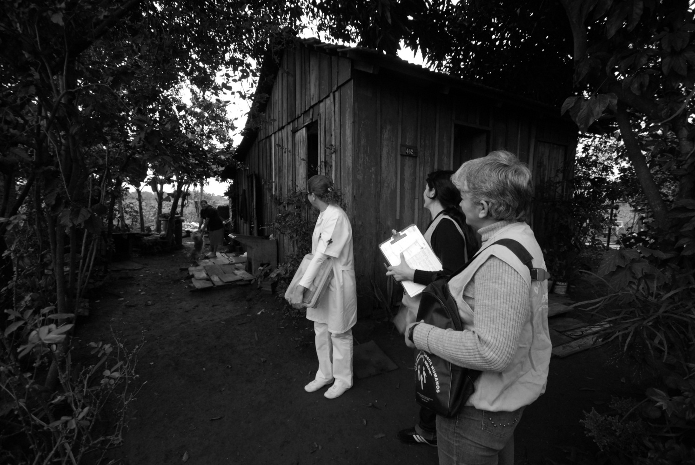
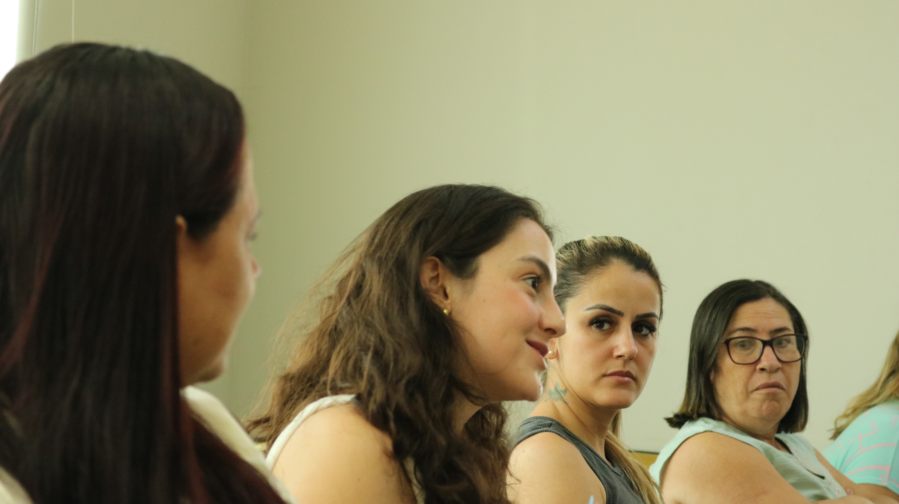
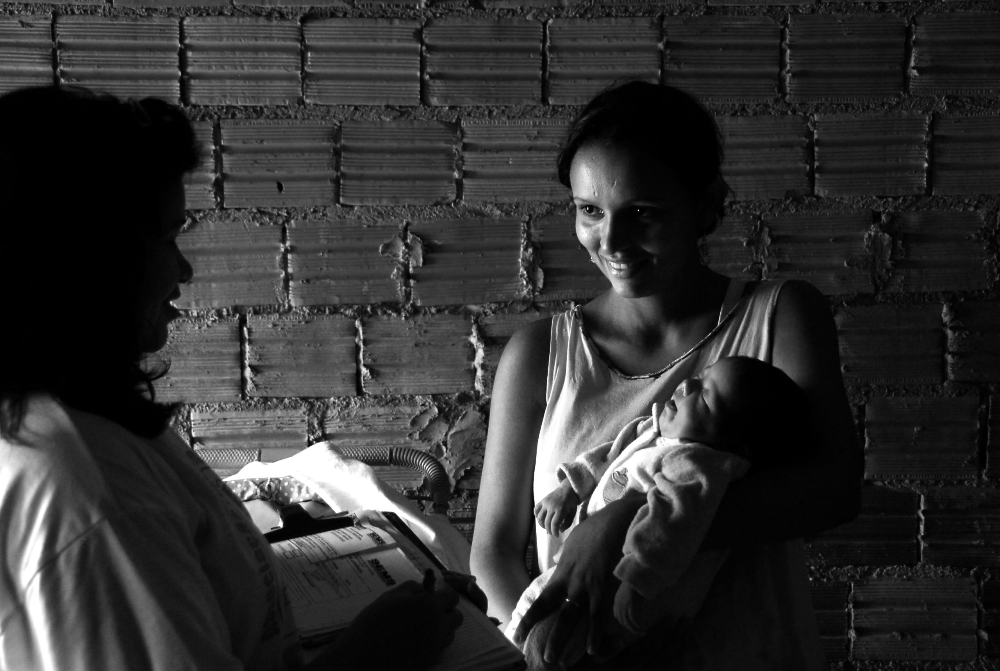
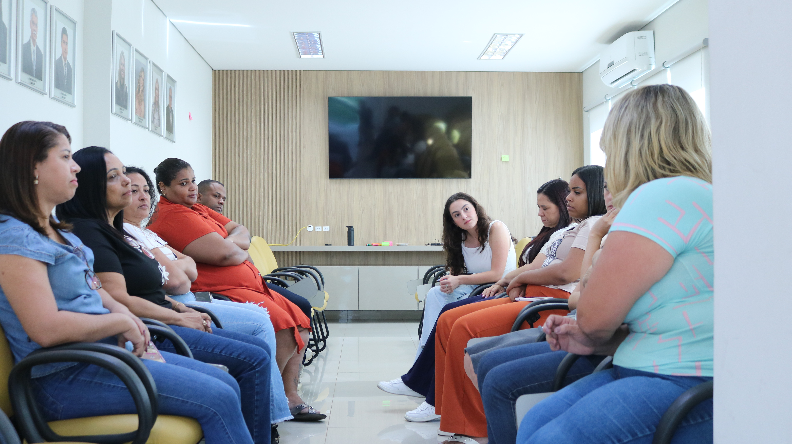
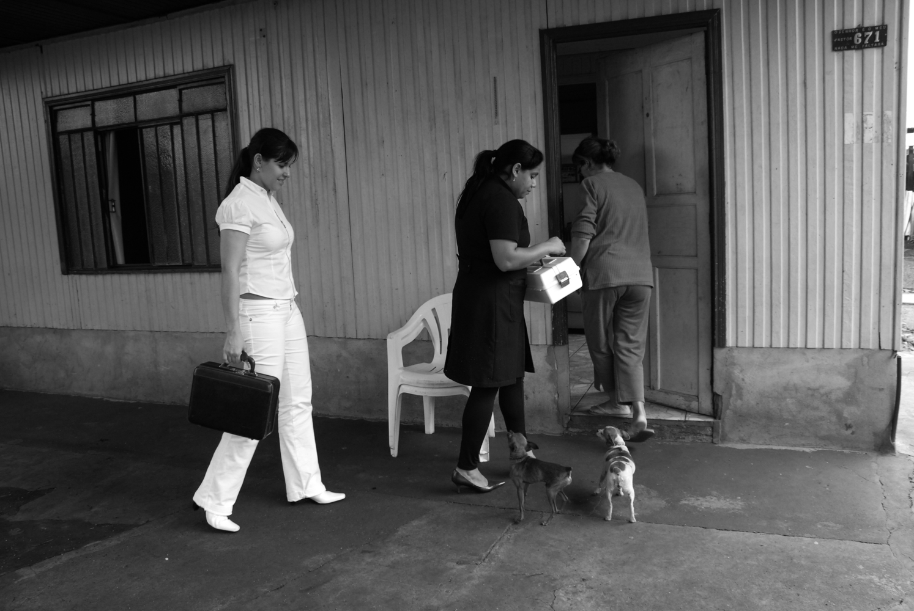
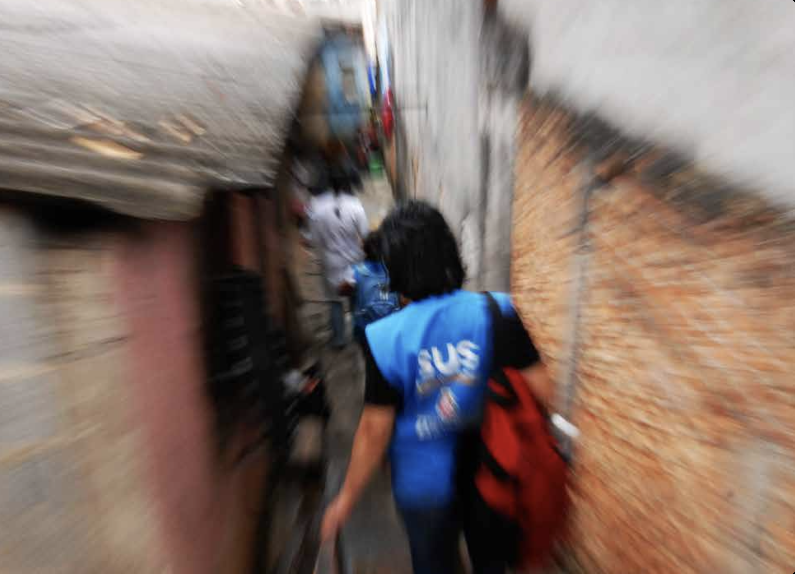

É esse mesmo vínculo que a meta diária da Agente Comunitária de Saúde, a ACS, gasta até romper.
Fotos: Radilson Carlos Gomes, Fotógrafo do SUS.
DESDE A LEI QUE CRIOU A CARREIRA, EM 2006, a exigência para ser Agente Comunitária de Saúde é morar no bairro onde vai trabalhar: a Lei 11.350 fez da vizinhança o pré-requisito do contrato dela.

Fotos: Radilson Carlos Gomes, Fotógrafo do SUS.
PARA A PORTA ABRIR, A AGENTE COMUNITÁRIA DE SAÚDE PRECISA SER VIZINHA. PARA A META FECHAR, A VISITA DELA VIRA NÚMERO.
1 Agente Comunitária de Saúde para cada 750 pessoas, com no mínimo 8 visitas por dia: o mesmo vínculo que abre a porta é o que a meta conta.
Lei 11.350/2006 · parâmetro de cobertura do Ministério da Saúde

“
DIREITO DE FAZER SEM DIREITO DE SER.
Agente Comunitária de Saúde, em comentário público no @paaps.brasil

A maior malha de cuidado público do mundo anda de porta em porta, sustentada por quem a rede mais “deixa ir embora.”

A CATEGORIA LUTOU 30 ANOS PELO PISO QUE CHEGOU EM 2026.
O salário sobe. A régua de 750 pessoas por agente segue igual.
Mesma rua. Mesmas casas.
A mesma agente sozinha nelas, sem reforço de enfermagem.
Nenhuma vaga nova para dividir o território.
O PISO CHEGA POR EMENDA CONSTITUCIONAL, NÃO POR LEI ORDINÁRIA: A MEDIDA DE QUANTO ESSA CATEGORIA AINDA PRECISA SE PROTEGER SOZINHA.

Fotos: Radilson Carlos Gomes, Fotógrafo do SUS.
39,9%
das Agentes Comunitárias de Saúde contratadas por CLT deixam o posto em até 12 meses.
O contrato temporário que devia segurar o vínculo é o mesmo que libera a saída quando a sobrecarga aperta. Fonte: levantamento setorial CLT citado em Ciência & Saúde Coletiva/SciELO, 2025, e Revista Médica de Minas Gerais (RMMG), ano não confirmado.

Fotos: Radilson Carlos Gomes, Fotógrafo do SUS.
A rede mais capilarizada do mundo anda de porta em porta com quem ela mais deixa ir embora.
No seu município, o que falta primeiro pra Agente Comunitária de Saúde ficar: salário, gente pra dividir o território, ou suporte de enfermagem pra quem já entrou sem ele?